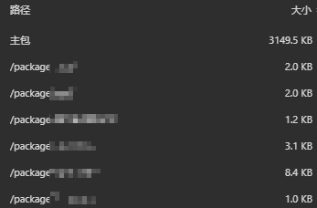
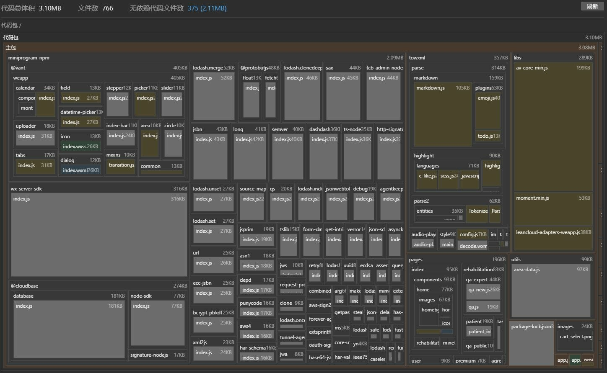

这两天被小程序代码包大小暴涨的问题困扰了挺久。简单说说怎么回事吧，就是之前好端端的微信小程序，最近配合新需求作了些改动，代码包大小突然翻了两倍多，从不到 2MB 一下子超过 5MB，超过了腾讯对小程序代码包大小不得超过 2MB 的限制，从而没法上传，也就没法真机调试，更不能发布了。
首先想到的是把所有图片资源都上传到文件服务器，腾出本地空间。但图片并不多，还用TinyPNG压缩过，心算都知道不可能超过 3MB。果然，即便移除了所有图片，代码包依然还有 4MB 多。
Google 一番，不少人都遇到过这个问题。网上给出的解决办法几乎清一色都是拆分代码包，虽然单个代码包不能超过 2MB，但通过拆分，总共不超过 20MB 就行。不是没想过拆，是感觉没这个必要，之前统计过，代码文件加一起也就 1.2MB，所以就没考虑过分包。既然众口一词都是教人如何分包，万一真是包治百病的济世良方呢，试试看，反正不要钱。
具体的分包策略和方式请参考官方文档，这里懒得赘述。
半信半疑地分完包，主包还是超过 4MB。要不就是改成云函数，但毕竟不是只写了个Hello World，改动太大，暂不考虑。但是网上找不到别的招儿了，没办法，自己琢磨、另辟蹊径呗。
文本文件不可能那么大，图片又都被我挪走了，那么嫌疑最大就是第三方 SDK。我只引用了两个 SDK，这次并没增加，只是将其中一个的版本升了级。首先查了一下该 SDK 的 Bug 列表，没有相关问题反馈。那会不会是升级之后，老版本没有及时清理，从而也被算进去了呢？因此我用npm uninstall命令卸载了该 SDK，并重新构建了 NPM，然而效果如同蚍蜉撼树。
直觉告诉我，方向肯定没问题。问题具体出在哪儿呢？我开始打起微信开发者工具的算盘。

有什么办法可以看到代码包里具体的文件大小吗？长话短说，此处省去 N 千字。“详情”→“基本信息”里的“代码依赖分析”猛地蹦到我的视线里，让我立马想起 Android Studio 里的Remove Unused Resources——对呀，找找看有没有无效的引用。

分析结果不仅按照方块面积来可视化文件大小，还可以列出哪些文件是没有被依赖的。这就好比泄露的内存，都没人用了，还在那儿占着地方。根据分析结果，从大到小将无依赖的代码文件该删的删、该砍的砍，在不影响小程序正常运行的前提下将主代码包大小降到 2MB 以下不是什么难事。